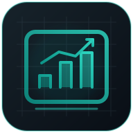
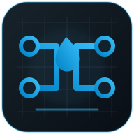
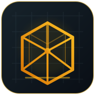
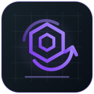

Calculadoras · Simuladores · Ingeniería
Todas tus herramientas.
Un solo enlace.
Entrá a tus aplicaciones de ingeniería desde un mismo lugar. Cada programa se abre en una pestaña nueva y sigue funcionando de forma independiente.

Presupuestos · H/H
ESTIMA
Estimación de horas hombre y presupuestos de ingeniería por disciplinas, etapas y entregables.
Abrir ESTIMA

Redes hidráulicas
HYDRA
Cálculo de redes de tuberías, bombas y válvulas; caudales, presiones y resultados hidráulicos.
Abrir HYDRA

Estructuras · 3D
ATLAS 3D
Modelado y análisis de estructuras tridimensionales con barras, nudos, cargas y resultados.
Abrir ATLAS 3D

Uniones atornilladas
TORQUE
Estimación de torque y precarga para tornillos, con selección de rosca, resistencia y lubricación.
Abrir TORQUE